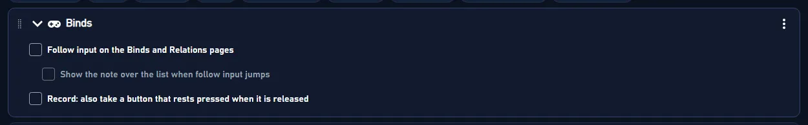
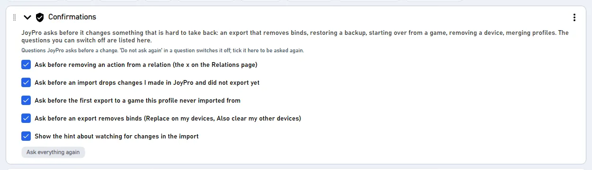
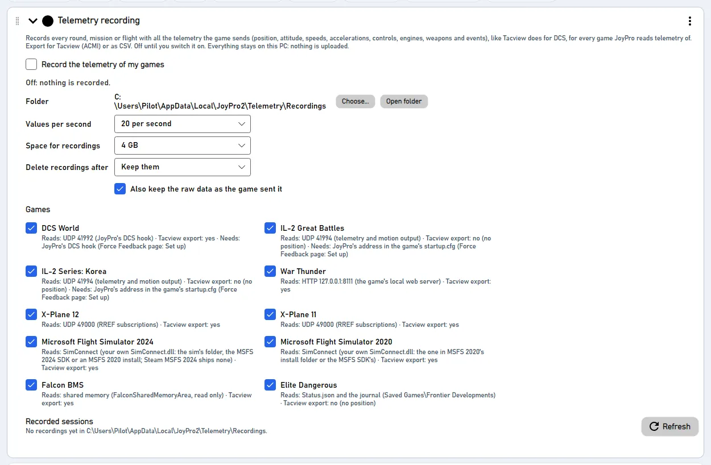
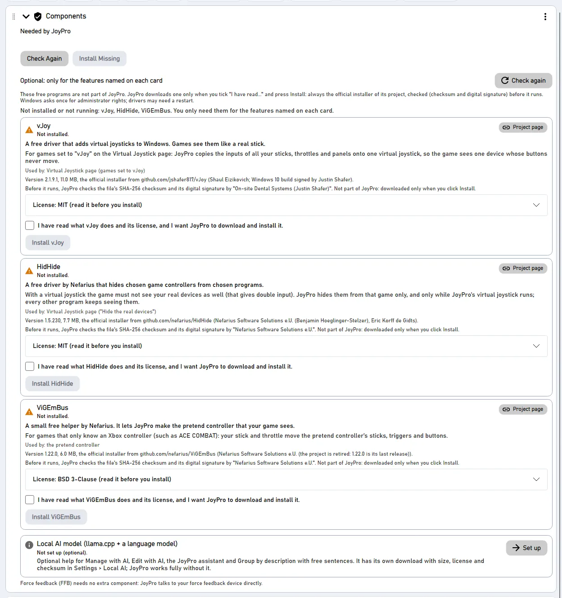
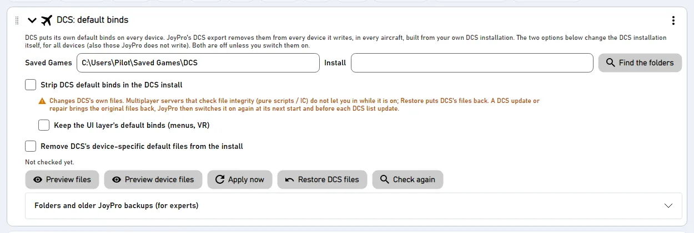

#Stran projekta
GumbopisanoNamig Odpre uradno stran izdaj komponente v brskalniku
Na kartici komponente: v brskalniku odpre uradno stran izdaj komponente, kjer jo njen lastni projekt opisuje in ponuja njene prenose.
Stran Nastavitve vsebuje vse nastavitve JoyPro v 25 razdelkih, ki se odpirajo in zapirajo. Iskalno polje najde nastavitev po besedi ("vrstica", "posodobitev", "fotografije"), zavihki na vrhu skočijo na razdelek, razdelke pa lahko razvrstite po svoje. Vsaka nastavitev se ohrani takoj in preživi ponovni zagon; gumba Shrani ni.


Prvi zagon odpre samo Igre; vse drugo je oddaljeno en klik. Večina ljudi kdaj koli potrebuje samo Igre, Videz, Jezik in O JoyPro in posodobitve.
| Razdelek | Kaj tam nastavite |
|---|---|
| Igre | Katere igre imate, povezane mape, spremljevalec konfiguracij iger, naprava vJoy, ki jo uporablja JoyPro |
| Vezave | Sledi vhodu, zajemanje gumbov, ki ostanejo pritisnjeni |
| Ogledi | Dobrodošlica, način pomoči (F1) in vsak ogled, da začnete znova |
| Zagon | Ob zagonu odpri zadnji profil |
| Strani v spodnji vrstici | Skrijte strani, spremenite njihov vrstni red |
| Jezik | Jezik JoyPro |
| Videz | Svetla, temna ali vaše lastne barve, velikost besedila, merilo vmesnika, urejevalnik tem |
| Teci v ozadju | Pomočnik v sistemski vrstici, ki naprej spremlja vaše igre |
| Potrditve | Vprašanja, ki jih JoyPro postavi pred spremembo |
| O JoyPro in posodobitve | Različica, stran projekta, posodobitve |
| Zasebnost | Fotografije proizvajalcev, paketi slik, naslovnice iger |
| Statistika uporabe | Stran Statistika, razvrstitev vaših najbolj uporabljenih letal |
| Snemanje telemetrije | Snemajte svoje lete kot Tacview |
| Risbe | Kako JoyPro riše vaše naprave; ponastavite spremembe postavitve |
| Prijava težave | En zip z vsem, kar je potrebno za iskanje težave |
| Lokalna UI | Neobvezni jezikovni model |
| Komponente | vJoy, HidHide, ViGEmBus in drugi neobvezni programi |
| Naprave | Vaše naprave, njihova imena, zamenjava ali odstranitev naprave |
| Seznami ukazov (DB) in poti iger | Informacije za strokovnjake |
| DCS: privzete vezave | Privzete vezave DCS v namestitvi DCS |
| Seznami ukazov za DCS, Star Citizen in IL-2 | Strokovne posodobitve seznamov ukazov |
| Nastavitve povratne sile iger | Lastne možnosti povratne sile v igrah |
| Povratna sila DCS: zamenjava in obrnitev | Smer povratne sile DCS za vsako napravo |


Ena kartica za vsako igro, ki jo JoyPro podpira in jo imate, z naslovnico, "Nameščeno" ali "Ni nameščeno", kje je in kje hrani svoje kontrole.
gui.vromfs.bin in lang.vromfs.bin za vsako dejanje letal in helikopterjev. Izklopljeno: samo lastni seznam JoyPro z dejanji War Thunder, ki jih pozna.Tukaj se v igri nič ne spremeni. Povezana mapa določa, kje uvoz in izvoz bereta in pišeta; skrita igra nima kartice za izvoz in je ne spremljamo.


Vaš odgovor na vprašanje čarovnika za nastavitev Ali uporabljate sledenje glave ali VR? S sledenjem glave (TrackIR, spletna kamera s sledenjem obraza, sledilnik oči Tobii) ali VR se razgledujete z obračanjem glave.
Vsi ogledi JoyPro na enem mestu (Način pomoči in ogledi):


Ob zagonu odpri zadnji profil (privzeto vklopljeno) odpre profil, ki ste ga imeli nazadnje odprtega; pot je prikazana spodaj. Opomba razloži zgodovino profila: vsaka sprememba se shrani sama in vsako shranjevanje je različica v Zgodovina (zgornja vrstica). Stare različice se redčijo: vse iz zadnjega dne, nato ena na uro 7 dni, ena na dan 60 dni, potem ena na teden; največ 200 MB na profil in 1 GB za vse. Različice, ki jih obdržite, ostanejo.


Ena vrstica za vsako stran spodnje vrstice. Odkljukajte stran, ki je ne uporabljate; vrstico povlecite za ročico (ali uporabite puščici), da spremenite vrstni red. Skrita stran se še vedno odpre z drugih strani (na primer Odpri stran Modifikatorji) in je v vrstici prikazana, dokler je odprta. Nastavitev ni mogoče skriti. Ponastavi na privzeto vrne vrstni red JoyPro z vsemi prikazanimi stranmi.


Jezik JoyPro: angleščina in 38 drugih jezikov ali Jezik sistema Windows (jezik prikaza v sistemu Windows ali angleščina, če ga JoyPro nima). Prevode je naredil stroj in lahko zvenijo nenavadno; imena ukazov iger ostanejo taka, kot jih imenuje igra. Meni pomočnika v sistemski vrstici sledi jeziku.


JoyPro lahko opazi, da ste v igri spremenili kontrole, samo dokler teče. Majhen pomočnik po zaprtju JoyPro naprej spremlja kot ikona v sistemski vrstici; ne porablja opazne moči procesorja in le nekaj MB pomnilnika.


JoyPro vpraša pred spremembo, ki jo je težko vrniti. Tu so navedena vprašanja, ki jih lahko izklopite: odstranitev dejanja iz relacije, uvoz, ki zavrže spremembe, ki jih še niste izvozili, prvi izvoz v igro, iz katere profil nikoli ni uvažal, izvoz, ki odstrani vezave, in namig o spremljevalcu pri uvozu. Vprašanje, ki ste ga izklopili z "Ne vprašaj več", je tu prikazano neodkljukano; Vprašaj vse znova jih vse znova vklopi.


Različica, gradnja in vrstica z licenco, Stran projekta in Stran izdaj, obvestila tretjih oseb in posodobitve: Preveri posodobitve, Namesti posodobitev (prenese novo različico, jo preveri, namesti in znova zažene JoyPro), Preveri posodobitve ob zagonu in Ponudi znova za različico, ki ste jo preskočili. "Od kod prihajajo posodobitve (za strokovnjake)" imenuje repozitorij GitHub, katerega izdaje JoyPro namešča.


JoyPro nima računa in nima telemetrije. Na splet gre samo za preverjanje posodobitev, fotografije izdelkov proizvajalcev (ko ste rekli da), naslovnice iger, ki manjkajo na tem računalniku, prenos neobveznega modela UI, neobvezne gonilnike in manjkajoči .NET Framework.


JoyPro si zabeleži, katere igre, letala in ladje uporabljate, iz lastnih dnevnikov iger in časa igranja v Steamu, ter na tem računalniku hrani povzetek.


Posname vsak krog, misijo ali let z vso telemetrijo, ki jo pošlje igra (položaj, lega, hitrosti, kontrole, motorji, orožje, dogodki), kot to dela Tacview za DCS, za vsako igro, iz katere JoyPro bere telemetrijo.


Kako JoyPro riše vaše naprave na strani Postavitev in na karticah naprav (črte ali senčenje v slogu risank, barve JoyPro ali vaše lastne), ločeno za zaslon ter za pregledne liste in izvoze. Ponastavi vse moje spremembe postavitve... vrne sliko vsake naprave na privzeto JoyPro (položaji vaših oznak, tabele in črte, preimenovani deli, fotografije, lastne definicije naprav in datoteke postavitve, ki jih uporablja profil; same datoteke ostanejo); Razveljavi ponastavitev takoj zatem jih vrne. Samo ena naprava: stran Postavitev, njen meni Model.... Kontrolniki za risanje so razloženi na Postavitev.


Spodaj sta Hrani dnevnike iz ozadja n dni (privzeto 30; skupaj največ 200 MB) in Odpri mapo dnevnikov.


Neobvezno. Pravila JoyPro brez povezave delujejo vedno; brezplačen odprtokodni jezikovni model lahko dodatno bere proste stavke v Upravljaj z UI, Uredi z UI, pomočniku JoyPro in pri združevanju po opisu, JoyPro pa preveri vsak odgovor. Na tem računalniku teče samo, dokler ga uporabljate.
llama-server.exe in datoteke .gguf, Poišči v tem računalniku, Uporabi te datoteke, Nehaj jih uporabljati.


Poglej znova pokaže kartico za vsako priključeno palico, plinsko ročico in pedala ter za vsako napravo, ki jo uporablja vaš profil: njeno sliko (kliknite jo, da odprete napravo na strani Postavitev), ime, ali je priključena in koliko vezav ima.


Odgovori samo za branje na plošči Izpis o tem, kaj JoyPro ve o vsaki igri: Povzetek DB, Preverjanje DB, Seznam DB, Igre DB, Letala DB, Prstni odtis DB, Poti iger, Seznam iger, Zaznavanje iger, s filtri za igro in letalo. Za branje novih ukazov igre po posodobitvi uporabite Posodobi na kartici igre na strani Začetek.


DCS na vsako napravo postavi svoje privzete vezave. Izvoz JoyPro za DCS jih že odstrani z vsake naprave, v katero piše, v vsakem letalu. Možnosti tukaj spremenita samo namestitev DCS, za vse naprave; obe sta izklopljeni, dokler ju ne vklopite.
<file>.nocombo.bak. Ohrani privzete vezave plasti UI (meniji, VR) pusti plast UI takšno, kot je.Te možnosti spremenijo lastne datoteke DCS. Nekateri strežniki za igro v več igralcih vas ne spustijo noter, dokler so vklopljene; Obnovi datoteke DCS vrne datoteke DCS. Posodobitev ali popravilo DCS vrne izvirne datoteke; JoyPro možnost ob naslednjem zagonu znova uveljavi.


Običajno se seznam igre zgradi s Posodobi na njeni kartici na strani Začetek. Tukaj: samo nekatera letala DCS, poskusni zagon brez pisanja in stari način s kliki.


Vsaka nastavitev povratne sile, ki jo ponuja igra (moč, učinki, za vsako napravo in v DCS za vsako letalo). JoyPro vrednosti, ki jih nastavite, shrani v profil in jih ob izvozu zapiše v igro; nastavitve, ki jih ne shranite, ostanejo takšne, kot jih ima igra. Izberite Igra, Naprava in Letala (vsa letala ali eno letalo, katerega vrednosti prevladajo), spremenite vrednosti, nato Uporabi. Povrni zavrže neuporabljene spremembe, Ne nastavljaj v vrstici preneha shranjevati eno nastavitev, Počisti odstrani vse prikazane shranjene nastavitve. Telemetrijska povratna sila samega JoyPro je na strani Povratna sila.


Če vaša palica s povratno silo v DCS potiska v napačno smer: zanjo odkljukajte Zamenjaj os, Obrni X ali Obrni Y, nato Uporabi. Počisti napravi vrne privzete nastavitve DCS. Tabela naprav s filtri (Samo povezane, Samo profil), gumbi za izbiro in Uporabi izbrano / Počisti izbrano / Počisti vse; "Ročno za eno napravo (napredno)" nastavi eno napravo po imenu.
DCS ob zagonu prebere smer povratne sile za vsako napravo: zamenjana ali obrnjena naprava potiska v drugo smer v vsakem letalu.
%APPDATA%\JoyPro2\ui-settings.json (okno, strani, odprti razdelki in njihov vrstni red, tema, jezik, potrditve, odgovori o zasebnosti, sistemska vrstica, izbire lokalne UI ...), zapisane takoj ob vsaki spremembi; teme kot datoteke JSON poleg nje. Model pogleda: MainWindowViewModel.SettingsPage.cs (razdelki, iskanje, vrstni red; SettingsSectionDefaults vsebuje id-je, naslove in ključne besede za iskanje), kontrolniki Views/Controls/SettingsSection.cs, SettingsSectionsPanel.cs, SettingsTabStrip.cs.engine games installs, engine games install set, engine games install disable, engine games config set (MainWindowViewModel.GameInstalls.cs, GameSetup.cs).MainWindowViewModel.NavPages.cs; videz: MainWindowViewModel.Appearance.cs, Services/ThemeService.cs; jezik: MainWindowViewModel.Language.cs (Lokalizacija).MainWindowViewModel.Updates.cs (Posodobitve); prijava: MainWindowViewModel.AppServices.cs, engine support bundle (Beleženje).engine usage harvest, engine usage ranking, engine usage pin (Statistika uporabe); snemanje telemetrije: MainWindowViewModel.TelemetryRecording.cs, engine telemetry sessions, engine telemetry export (Snemanje telemetrije).engine llm status, engine llm download, engine llm use-local, engine llm start (Združevanje z naravnim jezikom); komponente: MainWindowViewModel.Components.cs (Komponente).engine devices list, engine devices inputs, engine devices exchange, engine devices remove, engine games devices (Naprave).engine dcs strip-defaults, engine dcs device-luas, engine dcs defaults restore (MainWindowViewModel.DcsDefaults.cs); seznami ukazov: engine dcs refresh id, engine dcs refresh clean, engine db refresh-starcitizen, engine db refresh-il2; strokovni odgovori DB: engine db summary, engine db check, engine db list, engine db games, engine db planes, engine db fingerprint, engine games paths, engine games list, engine games detect.engine ffb models, engine ffb show, engine ffb set, engine ffb clear (shranjeno v profilu, zapisano ob izvozu; MainWindowViewModel.FfbSettings.cs); zamenjava/obrnitev v DCS: engine dcs ffb list, engine dcs ffb set, engine dcs ffb clear.Dokumentacija funkcij za to stranjo, ustvarjena iz repozitorija:
190 kontrolnikov, prebranih iz izvorne kode programa: 190 opisanih, 0 z dejstvi iz izvorne kode (namig, komentar v kodi, klic pogona), 0 jih je treba še razširiti.
Namig Odpre uradno stran izdaj komponente v brskalniku
Na kartici komponente: v brskalniku odpre uradno stran izdaj komponente, kjer jo njen lastni projekt opisuje in ponuja njene prenose.
Namig Popravilo ali odstranitev: odpre seznam nameščenih aplikacij sistema Windows, kjer je lasten program za odstranitev komponente
Na kartici nameščene komponente: odpre seznam Nameščene aplikacije v Windows.
Tam komponento popravite ali odstranite z njenim lastnim programom za odstranitev; JoyPro komponent ne odstranjuje sam.
Na kartici komponente: v brskalniku odpre licenco komponente na njeni uradni strani projekta.
Označite to za »da«. Nato JoyPro sme namestiti pomočnika.
Označite to za »da«: JoyPro sme prenesti in namestiti tega brezplačnega pomočnika.
Namesti deluje samo, ko je to označeno.
Prenese in namesti tega brezplačnega pomočnika. Najprej je treba odkljukati polje.
Prenese in namesti tega brezplačnega pomočnika: Namesti z imenom komponente.
Deluje samo po kljukici »Prebral sem ...«, zato najprej odkljukajte to polje.
Prikazano, medtem ko se komponenta prenaša: ustavi prenos.
Namestitvenega programa, ki že teče, JoyPro ne ustavi; uporabite Prekliči v njegovem lastnem oknu.
Namig Vklopljeno: x pri dejanju najprej vpraša 'Odstranim to dejanje?'. Izklopljeno: odstrani se takoj (Ctrl+Z to razveljavi).
Vklopljeno: x pri dejanju na strani Relacije najprej vpraša »Odstranim to dejanje?«.
Izklopljeno: dejanje se odstrani takoj; Ctrl+Z ga še vedno vrne.
Namig Vklopljeno: Uvozi na kartici igre najprej vpraša, ko ima profil za to igro spremembe, ki jih v igri še ni (Najprej izvozi, Uvozi, Prekliči). Izklopljeno: uvozi takoj (Zgodovina vrne spremembe).
Vklopljeno: Uvozi na kartici igre najprej vpraša, ko ima vaš profil za to igro spremembe, ki jih v igri še ni, z Najprej izvozi, Uvozi in Prekliči.
Izklopljeno: uvozi takoj; Zgodovina profila še vedno ima različico od prej.
Vklopljeno: prvi izvoz igre, iz katere ta profil nikoli ni uvažal, vpraša »Najprej uvozi?«, tako da se lastne vezave igre ne izgubijo nepričakovano.
Izklopljeno: izvozi takoj.
Vklopljeno: izvoz, ki odstrani vezave, enkrat vpraša, preden zapiše.
Izklopljeno: zapiše takoj.
Vklopljeno: uvoz pokaže namig, da lahko JoyPro spremlja igro glede sprememb kontrolnikov, ki jih naredite v igri.
Izklopljeno: namig je skrit.
Namig Vsako izklopljeno vprašanje bo spet postavljeno
Znova označi vsako vprašanje tega razdelka, tako da JoyPro od zdaj naprej znova vpraša vsako.
Omogočeno samo, dokler je izklopljeno vsaj eno vprašanje.
Namig Vklopi lokalno UI z nastavljenim modelom; naloži se ob naslednji zahtevi
Na znački »Lokalna UI« ob dejanjih UI, prikazani, ko je model nastavljen, a izklopljen: z enim klikom vklopi lokalno UI s tem modelom; naloži se ob vaši naslednji zahtevi.
Brez modela namesto tega odpre Nastavitve > Lokalna UI.
Namig Odpre Nastavitve > Lokalna UI: prenesite model (najprej velikost in licenca) ali uporabite svoj llama.cpp
Nastavi lokalno UI na znački »Lokalna UI«: odpre Nastavitve > Lokalna UI in se pomakne do nje, kjer prenesete model ali JoyPro usmerite na svoj llama.cpp.
Samo po sebi ne spremeni ničesar.
Namig Takoj ustavi lokalni model UI in sprosti njegov pomnilnik (naslednja zahteva ga znova naloži)
Ustavi zdaj, prikazano, ko je lokalni model UI naložen: model takoj konča in sprosti njegov pomnilnik.
Lokalna UI ostane vklopljena; naslednja zahteva UI model znova naloži.
Namig Vklopljeno: ko spodnja igra teče in pošilja telemetrijo, JoyPro zapiše eno datoteko na krog, misijo ali let. Izklopljeno: nič se ne snema in nič se ne preverja.
Privzeto izklopljeno. Vklopljeno: medtem ko označena igra teče in pošilja telemetrijo, JoyPro za vsak krog, misijo ali let zapiše en posnetek v mapo spodaj.
Izklopljeno: nič se ne snema in JoyPro ne išče tekočih iger.
Namig Kam gredo posnetki, na kateri koli disk (disk s prostim prostorom: ena ura je približno 10 do 50 MB)
Mapa > Izberi ...: izbere, kam gredo novi posnetki, na katerem koli pogonu.
Seznam Posnete seje nato pokaže posnetke te mape; obstoječi posnetki se ne premaknejo.
Namig Nazaj v podatkovno mapo JoyPro
Prikazano, ko ste izbrali lastno mapo: novi posnetki gredo znova v podatkovno mapo JoyPro in seznam pokaže posnetke tam.
Posnetki v vaši mapi ostanejo, kjer so.
V Raziskovalcu odpre mapo posnetkov.
Namig Lastni paketi, odgovori in datoteke igre ob vrednostih, za orodja, ki jih berejo. Približno dvojna velikost.
Privzeto vklopljeno: vsak posnetek ob vrednostih hrani tudi lastne pakete, odgovore in datoteke igre, za orodja, ki jih berejo.
Posnetek je potem približno dvakrat večji.
Ena igra snemanja telemetrije: označene igre se snemajo, medtem ko tečejo in pošiljajo telemetrijo.
Vrstica spodaj pove, kaj JoyPro posluša za to igro.
Znova prebere seznam posnetih sej iz mape posnetkov.
Namig Datoteka .zip.acmi, ki jo odpre Tacview: sled, lega, hitrosti in drugi objekti, ki jih je igra sporočila. Samo za igre, katerih telemetrija ima položaj.
Izbrani posnetek zapiše kot datoteko .zip.acmi, ki jo odpre Tacview, v mapo Exports ob posnetkih in jo pokaže v Raziskovalcu.
Samo za igre, katerih telemetrija ima položaj.
Namig Mapa z eno tabelo vseh vrednosti za vsak trenutek, dogodki, seznamom kanalov in eno majhno datoteko na kanal (ločeno z vejicami, decimalna pika).
Izbrani posnetek zapiše kot mapo datotek CSV v mapo Exports ob posnetkih: ena tabela vseh vrednosti za vsak trenutek, dogodki, seznam kanalov in ena majhna datoteka za vsak kanal.
Raziskovalec odpre mapo.
Izbriše izbrani posnetek.
x v Išči po nastavitvah: počisti iskanje, tako da se znova pokaže vsak razdelek.
Odpre vsak razdelek strani Nastavitve.
Kateri razdelki so odprti, si JoyPro zapomni za naslednji zagon.
Zapre vsak razdelek, tako da stran pokaže samo njihove naslove; tistega, ki ga potrebujete, odprete s klikom.
Majhna puščica ob Odpri vse / Zapri vse: razdelke vrne v vrstni red JoyPro, odprt je samo Igre.
Nov vrstni red se ohrani za naslednji zagon.
Namig Svetle barve
Namig Temne barve
Namig Sledi nastavitvi sistema Windows
JoyPro sledi nastavitvi Windows za aplikacije.
Ohrani se za naslednji zagon.
Namig Prikaži JoyPro v tej temi
Uporabi pri eni od vaših lastnih tem: takoj pokaže JoyPro v tej temi.
Ohrani se za naslednji zagon.
Namig Odpri jo v urejevalniku tem spodaj
Uredi pri eni od vaših lastnih tem: odpre njeno kopijo v urejevalniku tem spodaj.
Nič se ne spremeni, dokler ne pritisnete Shrani ali Uporabi to temo.
Namig Velikost besedila teme ali 100 %
Ponastavi ob Velikost besedila: opusti velikost besedila, ki ste jo izbrali, tako da znova velja velikost besedila teme v uporabi ali 100 %, če je nima.
Namig Nazaj na 100 %
Ponastavi ob Merilo vmesnika: celotno okno se vrne na 100 %.
Urejevalnik tem: začne novo temo iz svetlih barv JoyPro in jo odpre v urejevalniku s sprotnim predogledom.
Kot datoteka se shrani samo s Shrani ali Uporabi to temo.
Urejevalnik tem: začne novo temo iz temnih barv JoyPro in jo odpre v urejevalniku.
Namig Datoteka teme (.json), ki jo je nekdo delil z vami
Urejevalnik tem: izbere datoteko teme, ki jo je nekdo delil z vami.
JoyPro jo preveri, kopira v svojo mapo tem in odpre v urejevalniku; vrstica nad urejevalnikom pove, kaj je bilo uvoženo ali zakaj ne.
Del sprotnega predogleda urejevalnika tem: vzorčni gumb, ki pokaže, kako so gumbi videti v urejani temi.
Ne naredi ničesar.
Del sprotnega predogleda urejevalnika tem: vzorčni poudarjeni gumb.
Ne naredi ničesar.
Del sprotnega predogleda urejevalnika tem: vzorčni onemogočen gumb.
Ne naredi ničesar.
Del sprotnega predogleda urejevalnika tem: vzorčni gumb strani spodnje vrstice.
Ne naredi ničesar.
Del sprotnega predogleda urejevalnika tem: vzorčni gumb strani, prikazan kot izbran.
Ne naredi ničesar.
Del sprotnega predogleda urejevalnika tem: vzorčni gumb strani spodnje vrstice.
Ne naredi ničesar.
Namig Posvetli ali potemni barve besedila, dokler ni vse besedilo berljivo
Prikazano, ko preverjanje kontrasta najde težko berljiva besedila: barve besedila urejane teme posvetli ali potemni, dokler ni vsako besedilo berljivo, in pove, koliko barv se je spremenilo.
Shrani se samo s Shrani ali Uporabi to temo.
Namig Jo shrani in prikaže JoyPro v njej
Shrani urejano temo in takoj pokaže JoyPro v njej.
Ohrani se za naslednji zagon.
Urejano temo shrani kot datoteko v mapo nastavitev JoyPro.
Če je to tema v uporabi, okno spremembo pokaže takoj.
Naredi kopijo urejane teme in kopijo odpre v urejevalniku, za različico teme, ki vam je všeč.
Namig Shrani temo kot datoteko za deljenje
Urejano temo shrani kot datoteko .json, kamor izberete, da obdržite kopijo ali jo delite; drugi jo naložijo z Uvozi....
Namig Vse barve nazaj na temo, na kateri temelji, in pisave nazaj na pisave JoyPro
Vsako barvo urejane teme vrne na temo, na kateri temelji; tudi pisave se vrnejo na tiste iz JoyPro.
Ime ostane, datoteka teme pa se spremeni samo s Shrani ali Uporabi to temo.
Izbriše datoteko urejane teme. Če je bila to tema v uporabi, se JoyPro vrne na vgrajeno temo.
Namig Nastavitev ob prvem zagonu: katere igre imate, povezane mape (prenosne namestitve) in lokacije konfiguracij
Znova poišče vaše igre in odpre okno prvega zagona: označite igre, ki jih imate, povežite mape prenosnih namestitev in nastavite druge lokacije konfiguracije.
Nič se ne spremeni, dokler tam ne pritisnete Končano.
Znova poišče vaše igre, na primer potem ko ste igro namestili ali premaknili, in posodobi kartice tukaj, stran Začetek in stran Izvoz.
Namig Ko v igri spremenite kontrolnike, ki jih upravlja JoyPro, JoyPro po zaprtju igre vpraša, ali naj jih prevzame v vaš profil
Privzeto vklopljeno: ko v igri spremenite kontrolnike, ki jih upravlja JoyPro, JoyPro to opazi, ko se igra zapre, in vpraša, ali naj spremembe prevzame v vaš profil.
Spremljane so igre, v katere ste izvažali ali iz katerih ste uvažali in ki so na strani Začetek označene za spremljanje.
Namig Vklopljeno (privzeto): JoyPro razpakira gui.vromfs.bin in lang.vromfs.bin (samo za branje) za vsako dejanje letala in helikopterja. Izklopljeno: JoyPro uporablja samo svoj seznam dejanj War Thunder, ki jih pozna.
Privzeto vklopljeno: ko JoyPro gradi seznam ukazov War Thunder, razpakira gui.vromfs.bin in lang.vromfs.bin igre za vsa dejanja letal in helikopterjev.
Izklopljeno: JoyPro uporablja samo lasten seznam dejanj War Thunder, ki jih pozna.
Namig Datoteke HLL Vietnam so stisnjene z Oodle in igra ne prinaša lastne knjižnice Oodle. Z vašim da JoyPro uporabi tisto, ki jo prinaša druga igra v tem računalniku (od tam, kjer je, nikoli kopirano). Izklopljeno: JoyPro lasten seznam tipk igralne plošče, kar je vse, kar potrebuje način Xbox pad.
Vaš odgovor na vprašanje, ki ga JoyPro postavi, ko gradi seznam ukazov Hell Let Loose: Vietnam: označeno, JoyPro stisnjene datoteke igre prebere s knjižnico Oodle, ki jo dobavlja druga nameščena igra, tam, kjer je.
Neoznačeno: lastni seznam tipk igralnega ploščka JoyPro, kar je vse, kar potrebuje način Xbox pad.
Pozabi vaš odgovor o datotekah igre Hell Let Loose: Vietnam; JoyPro vpraša znova, ko naslednjič gradi seznam ukazov te igre.
Namig Ta mapa nato velja za namestitev igre (mapa igre, mapa njenega zaganjalnika ali mapa bin)
Izberi mapo... na kartici igre: poveže mapo igre.
Deluje tudi mapa zaganjalnika ali mapa bin; JoyPro zanjo poveže mapo igre.
Namig Izberite .exe igre ali njen zaganjalnik; JoyPro poveže mapo igre
Izberi .exe... na kartici igre: izberite program igre ali njen zaganjalnik; JoyPro zanj poveže mapo igre, kot Izberi mapo....
Namig Pozabi vašo mapo in znova zaznaj igro
Uporabi zaznano na kartici igre z lastno mapo: pozabi povezavo, tako da JoyPro igro znova zazna sam.
Datotek igre se ne dotakne.
Namig Je nimate ali vas ne zanima: skrita povsod v JoyPro (kartice, izvoz, spremljanje, seznami iger); šteje se za nenameščeno. Vaše vezave zanjo ostanejo.
Skrij na kartici igre: za igro, ki je nimate ali vas ne zanima.
Skrita je povsod v JoyPro in velja za nenameščeno; vaše vezave zanjo ostanejo v profilu.
Namig Pritisnite gumb (ali močno premaknite os) in stran Vezave ali Relacije skoči na njegovo relacijo; pritisnite ga znova za naslednjo relacijo na njem, najprej tiste brez modifikatorjev. Ne med zajemanjem ali tipkanjem v polje.
Privzeto vklopljeno: pritisnite gumb in stran Vezave ali Relacije skoči na njegovo relacijo; pritisnite ga znova za naslednjo relacijo na njem, najprej tiste brez modifikatorjev.
Ne med zajemanjem ali tipkanjem v polje in samo, dokler je okno JoyPro v ospredju.
Namig Kratka opomba na dnu seznama (BTN 8 na WarBRD: Gear), ko je sledenje vhodu skočilo. Seznam skoči tudi, ko je to izklopljeno.
Privzeto izklopljeno: ko je Sledi vhodu skočil, kratka opomba na dnu seznama pove, kaj je bilo pritisnjeno.
Seznam skoči z njo ali brez nje.
Namig Zajemanje prevzame samo gumb, ki spremeni stanje; gumb, ki je bil že pritisnjen, ko se je zajemanje začelo (sredina 3-položajnega stikala, stikalo načina), se nikoli ne šteje. Označeno: spust se šteje kot ta gumb.
Privzeto izklopljeno: zajemanje sprejme samo gumb, ki spremeni stanje, zato gumb, ki je že pritisnjen, ko se zajemanje začne, nikoli ne šteje.
Označeno: spust takega gumba šteje kot ta gumb.
Namig Vklopljeno: pod ujemanji imena prideta Enaka funkcija (enaka funkcija, najdena po sinonimu ali opisu) in Sorodno (strnjeno). Izklopljeno: samo dejanja, katerih ime vsebuje vsako vneseno besedo. Isto stikalo je poleg Vse / Osi / Gumbi.
Nastavitve > Relacije, privzeto vklopljeno: iskanje Dodaj dejanja pod dejanji, katerih ime vsebuje vsako vneseno besedo, navede tudi dejanja, ki naredijo to, kar pomenijo vaše besede, in ohlapnejša.
Izklopljeno: samo ta ujemanja imena.
Izberite to, če se razgledujete s premikanjem glave.
Izberite to, če se razgledujete s sledenjem glave, sledilnikom oči Tobii ali VR, ali če ga nameravate nabaviti.
Vsaka poznejša nastavitev potem v letalskih simulatorjih na vaš HOTAS ne postavi gumbov za pogled ali razgledovanje, samo gumb za ponovno centriranje pogleda, da vaši gumbi ostanejo prosti za druge funkcije.
Izberite to, če se razgledujete s Hatom na palici.
Izberite to, če se razgledujete s palico ali plinsko ročico.
Vsaka poznejša nastavitev postavi razgledovanje na Hat ali palčno palico z visoko prednostjo: takoj za topom, spustom orožja, protiukrepi, zavorami, trimom in ciljem.
Namig Odpre čarovnika za nastavitev za te simulatorje
Znova nastavi vaše simulatorje z vašim novim odgovorom.
Prikaže se, ko spremenite odgovor: odpre čarovnika za nastavitev za nameščene simulatorje, ki jih odgovor zadeva, da se tam razgledovanje nastavi znova.
Vaš profil se spremeni šele, ko uporabite novi načrt.
Pokaže ali skrije to stran v spodnji vrstici.
Skrita stran se še vedno odpre z drugih strani in je prikazana, dokler je odprta.
To stran premakne na seznamu za eno mesto navzgor, kar je v spodnji vrstici eno mesto v levo.
Vrstni red se ohrani za naslednji zagon.
To stran premakne na seznamu za eno mesto navzdol, kar je v spodnji vrstici eno mesto v desno.
Namig Vrstni red strani JoyPro, prikazane so vse strani
Strani spodnje vrstice vrne v vrstni red JoyPro in znova pokaže vsako stran.
Namig Vprašanje ob prvem zagonu: kaj želite narediti in kateri ogled ustreza
Znova prikaže dobrodošlico z vsemi ogledi.
Prikaži dobrodošlico znova odpre vprašanje prvega zagona: kaj želite narediti?
Izberite odgovor in JoyPro začne ogled ali hitro nastavitev, ki vam ustreza.
Namig Kliknite kar koli in videli boste, kaj počne; F1 ali Esc ga konča
Klik na to, nato na kateri koli gumb: prikaže se, kaj počne.
Način pomoči vklopi način pomoči: klik na kateri koli gumb, polje, vrstico seznama ali zavihek tega ne izvede več, ampak pokaže, kaj naredi.
F1, Esc ali Končaj način pomoči na vrhu ga konča.
Namig Dobrodošlica se znova prikaže ob naslednjem zagonu in noben ogled ne velja za ogledanega
Dobrodošlica se vrne ob naslednjem zagonu.
Vprašaj znova ob naslednjem zagonu poskrbi, da se dobrodošlica znova pokaže, ko se JoyPro naslednjič zažene.
Vsak ogled spet velja za neviden; vaš profil in vaše druge nastavitve ostanejo, kakršni so.
Namig Veliko besedilo in zelo kratki stavki v ogledih in pomoči. Dobro za otroke in za vse, ki želijo preprosto.
Veliko besedilo in kratki stavki v ogledih in pomoči.
Preproste besede: velike kartice in najkrajša besedila v ogledih, pomoč F1 pa začne z enim preprostim stavkom, podrobnosti so pod Več podrobnosti.
Shrani se takoj; ostane tudi po ponovnem zagonu.
Namig Spodnji ogledi prikažejo samo korake, ki jih potrebujete
Samo bistveno: ogled, začet s seznama spodaj, pokaže samo korake, ki jih potrebujete.
Dodatki, kot je način zaskočke v ogledu DCS, so izpuščeni.
Namig Spodnji ogledi prikažejo vsak korak, tudi dodatne
Vse funkcije: ogled, začet s seznama spodaj, pokaže vsak korak, tudi dodatke.
Vaša izbira ostane tudi po ponovnem zagonu.
Namig Zažene ta ogled
Zažene ta ogled.
Začni ogled začne ta ogled: zatemni okno, naredi, da gumb, o katerem govori, zažari, in počaka na vaš klik.
Hitri ogled pokaže, kje pozneje spremenite gumb; sama hitra nastavitev je Nastavi vse namesto mene na strani Začetek.
Namig JoyPro odpre profil, ki ste ga imeli nazadnje odprtega, takoj po prikazu okna. Odkljukajte, da začnete brez odprtega profila.
Privzeto vklopljeno: JoyPro odpre profil, ki ste ga imeli odprtega nazadnje, takoj ko se pokaže njegovo okno; njegova pot je prikazana spodaj.
Neoznačeno: JoyPro se zažene brez odprtega profila.
Namig Pomočnik v sistemski vrstici se zažene sam ob prijavi v Windows; okno JoyPro se ne odpre. Skrbniške pravice niso potrebne; odkljukajte, da ga spet odstranite iz zagona sistema Windows.
Privzeto izklopljeno. Vklopljeno: majhen pomočnik v sistemski vrstici se zažene sam, ko se prijavite v Windows, in še naprej spremlja vaše igre; okno JoyPro se ne odpre.
Ko to označite, se označi tudi Zapri v sistemsko vrstico.
Namig Zapiranje JoyPro (X) pusti pomočnika v sistemski vrstici, da spremlja vaše igre. Odkljukajte, pa zapiranje JoyPro konča tudi spremljanje.
Ob zaprtju JoyPro spremljanje iger preda pomočniku v sistemski vrstici, ki ostane v sistemski vrstici z nekaj MB pomnilnika.
Ko to označite, se pomočnik takoj zažene.
Namig JoyPro na GitHubu: izvorna koda, izdaje, poročila o težavah
V brskalniku odpre stran projekta JoyPro na GitHub: izvorno kodo, izdaje in prijave težav.
Namig Vsaka izdaja s seznamom sprememb
V brskalniku odpre izdaje JoyPro na GitHub: vsako izdajo s tem, kar se je spremenilo.
Namig Vpraša GitHub za najnovejšo izdajo JoyPro; novejša se ponudi s seznamom sprememb
GitHub vpraša po najnovejši izdaji JoyPro in vedno pove, kaj je našel: novejša različica je ponujena s tem, kar se je spremenilo, sicer »JoyPro2 je posodobljen«.
Tudi različica, ki ste jo preskočili, je ponujena tukaj.
Namig Prenese novo različico, jo preveri, namesti in znova zažene JoyPro
Ko je preverjanje našlo novejšo različico: jo prenese, preveri prenos, zapre JoyPro, namesti novo različico in JoyPro znova zažene, z napredkom v oknu posodobitve.
Vaši profili in nastavitve ostanejo.
Namig Ob vsakem zagonu JoyPro enkrat vpraša GitHub, ali obstaja novejša različica, in vas vpraša, preden posodobi
Privzeto vklopljeno: ob vsakem zagonu JoyPro enkrat vpraša GitHub, ali obstaja novejša različica, in ponudbo pokaže samo, ko obstaja.
Brez vašega klika se nikoli ne posodobi.
V ponudbi posodobitve ste izbrali »Preskoči to različico«: to se pozabi, tako da naslednje preverjanje različico znova ponudi.
Namig Pozabi da / ne, ki ste ga dali za posamezno napravo; JoyPro vpraša znova, preden prikaže fotografijo proizvajalca
Pozabi da ali ne, ki ste ga za vsako napravo dali za fotografijo izdelka proizvajalca, tako da JoyPro znova vpraša, preden jo prenese.
Vrstica ob njem prešteje vaše odgovore.
Namig Ko se pojavi naprava, katere referenčnih fotografij ni v tem računalniku, jih JoyPro v ozadju prenese z izvirnega naslova (ali iz spletnega arhiva, ko naslova ni več), preveri vsako in jo shrani v vašo podatkovno mapo. Izklopljeno: JoyPro jih ponudi in počaka na vaš klik.
Vklopljeno: ko se pojavi naprava, katere referenčnih fotografij ni na tem računalniku, jih JoyPro v ozadju prenese z izvirnega naslova, vsako preveri in jo hrani v vaši podatkovni mapi.
Izklopljeno: JoyPro jih ponudi in počaka na vaš klik.
Namig Naslovnice iger, za katere Steam v tem računalniku nima slike, se enkrat prenesejo iz trgovine Steam ali spletnega mesta založnika (medijski viri pogona). Izklopljeno: značke JoyPro in slike, ki so že v tem računalniku. Začne veljati ob naslednjem zagonu.
Naslovnice iger, za katere Steam na tem računalniku nima slike, se enkrat prenesejo iz trgovine Steam ali s spletnega mesta založnika.
Izklopljeno: značke JoyPro in slike, ki so že na tem računalniku.
Namig Ure po igri, letalu in ladji, deset najboljših, nizi, uboji, pristanki, skoki, vaš profil skozi čas in zanimivosti
Privzeto izklopljeno: v spodnji vrstici pokaže stran Statistika z urami na igro, letalo in ladjo, top 10, nizi, sestreli, pristanki, skoki, vašim profilom skozi čas in zabavnimi dejstvi.
Ohrani se za naslednji zagon.
Namig Samodejna dodelitev, Samodejno združevanje, čarovnik za nastavitev in Razporedi z UI dajo letalu, s katerim še niste leteli, razporeditev vašega najpogosteje uporabljenega letala njegovega razreda (lovci, helikopterji, vesoljske ladje). Spodaj pripnite letalo, da postane vzor.
Privzeto vklopljeno: Samodejna dodelitev, Samodejno združevanje, Čarovnik za nastavitev in Razporedi z UI letalu, s katerim še niste leteli, dajo postavitev vašega najpogosteje uporabljenega letala njegovega razreda; Pripni spodaj izbere vzor.
Izklopljeno: razporedijo ga brez tega vzora.
Prebere, kaj so vaše igre zabeležile od zadnjič, in posodobi razvrstitev in stran Statistika.
Običajno se to zgodi ob zagonu in po zaprtju igre.
Pripni / Odpni v vrstici razvrstitve: pripeto letalo je vzor za nova letala njegovega razreda, ko jih Samodejna dodelitev, Samodejno združevanje, Čarovnik za nastavitev ali Razporedi z UI razporedijo.
V igri: letala, razporejena po tem, dobijo postavitev gumbov pripetega letala.
Izključi / Vključi v vrstici: izključeno letalo ali igra ne šteje več v razvrstitvi.
Sliko vsake naprave vrne na privzeto JoyPro: vaše položaje oznak, tabele in črte, preimenovane dele, fotografije, lastne definicije naprav in datoteke postavitve, ki jih uporablja profil.
Najprej vpraša; Razveljavi ponastavitev takoj zatem vse vrne.
»Razveljavi ponastavitev«: vrne spremembe postavitve, ki jih je odvzela zadnja ponastavitev.
Prikazano samo takoj po ponastavitvi.
Privzeto vklopljeno: Ustvari poročilo v zip da tudi vaš odprti profil, njegovo zgodovino in trenutne datoteke vezav iger, kar najbolj pomaga pri iskanju težave.
Izklopljeno: poročilo jih izpusti.
Najprej pokaže, kaj gre v poročilo, nato na tem računalniku shrani en zip z vašim besedilom iz Kaj se je zgodilo? in tem, kar je potrebno za iskanje težave, ter ga izbere v Raziskovalcu.
Vaša uporabniška mapa in ime sta zamenjana, e-poštni naslovi in gesla odstranjeni; nič se ne pošlje.
Pokaže zip, ki ga je naredil Ustvari poročilo, izbran v Raziskovalcu, da ga priložite ali si ga najprej ogledate.
V brskalniku odpre novo prijavo težave na strani GitHub JoyPro z izpolnjenim vašim opisom; tam povlecite zip poročila v besedilno polje prijave.
JoyPro ničesar ne naloži.
V Raziskovalcu odpre mapo dnevnikov JoyPro: dnevnike ozadja vmesnika in pogona ter dnevnik seje plošče Izpis.
Vklopi ali izklopi izbirni lokalni model UI za vsa dejanja UI.
Izklopljeno: samo pravila JoyPro brez povezave, ki vedno delujejo.
Namig Model naloži zdaj, da vaša naslednja zahteva UI dobi odgovor takoj (ustavi se po minutah nedejavnosti)
Zdaj naloži lokalni model UI, tako da vaša naslednja zahteva UI dobi odgovor takoj; po minutah nedejavnosti se spet ustavi.
Potrebuje vklopljeno in pripravljeno lokalno UI; sicer vrstica stanja pove, zakaj.
Pogon znova vpraša, kaj je nastavljeno in teče, ter posodobi vrstice stanja.
Vaš da za velikost prenosa in zgoraj prikazane licence za izbrani model in llama.cpp.
Prenesi in vklopi deluje samo, ko je to označeno.
Namig Prenese llama.cpp in model, preveri kontrolne vsote SHA-256 in vklopi lokalni model UI
Prenese llama.cpp in izbrani model, preveri njune kontrolne vsote SHA-256 in vklopi lokalno UI, z napredkom spodaj.
Deluje samo, ko je označeno Sprejemam velikost in zgornje licence.
Ustavi tekoči prenos modela. Že preneseni del se ohrani; Prenesi in vklopi ga nadaljuje.
Izbrani preneseni model izbriše s tega računalnika, da sprosti prostor.
Izbere vaš lastni llama-server.exe. Nato pritisnite Uporabi te datoteke.
Izbere vašo lastno datoteko modela .gguf. Nato pritisnite Uporabi te datoteke.
Namig Išče llama-server.exe in modele GGUF v običajnih mapah (samo za branje) in izbere par, ki ustreza temu računalniku
V običajnih mapah poišče llama-server.exe in modele GGUF, ki so že na tem računalniku, in izpolni par, ki ustreza temu računalniku.
Nato pritisnite Uporabi te datoteke.
Namig Odslej lokalna UI zaganja vaš llama-server.exe s to datoteko GGUF (nič se ne prenese)
Od zdaj naprej lokalna UI zažene vaš lastni llama-server.exe z izbrano datoteko GGUF in je vklopljena; nič se ne prenese.
Nehaj jih uporabljati se vrne na preneseni model.
Neha uporabljati vaš lastni llama.cpp in datoteko GGUF; lokalna UI znova uporablja preneseni model.
Vaše datoteke ostanejo, kjer so.
Potrebno za JoyPro > Preveri znova: znova preveri, ali so nameščene komponente, ki jih pogon potrebuje, in nato, ali se pogon res zažene, kot ob zagonu programa.
Namesti manjkajoče je omogočeno, ko manjka nekaj, kar lahko namesti.
Iz uradnega vira namesti, kar JoyPro sam potrebuje in mu manjka, nato znova preveri, ali se pogon zažene.
Namig Pogleda, kaj je nameščeno in teče (samo branje)
Neobvezno > Preveri znova: pogleda, kateri neobvezni programi so nameščeni, v kateri različici in ali tečejo njihovi gonilniki, ter posodobi kartice.
Samo za branje.
Namig Odpre Nastavitve > Lokalna UI
Nastavi na kartici lokalne UI v razdelku Komponente: odpre Nastavitve > Lokalna UI, kjer ima model svoj prenos z velikostjo, licenco in kontrolno vsoto.
Namig Vaše povezane palice, plinske ročice in pedala ter naprave, ki jih uporablja vaš profil
Prebere vaše povezane palice, plinske ročice in pedala ter naprave, ki jih uporablja vaš profil, in za vsako pokaže kartico: njeno sliko, ime, ali je povezana in koliko vezav ima.
Samo za branje.
Namig Naprave, ki ste jih poimenovali na strani Postavitev, so prikazane s tem imenom (pravo ime je v opisu orodja)
Imena naprav: naprave, ki ste jih poimenovali na strani Postavitev, so v JoyPro prikazane s tem imenom; pravo ime je v namigu.
Izvozi vedno uporabljajo pravo napravo.
Namig Vsaka naprava je prikazana z imenom, ki ji ga da Windows
Imena naprav: vsaka naprava je prikazana z imenom, ki ji ga da Windows, tudi ko ste ji dali ime na strani Postavitev.
Slika kartice naprave: odpre napravo na strani Postavitev z njeno sliko, oznakami in vezavami.
Namig Analogna tipkovnica svoje tipke sporoča tudi kot osi: tipkanje jih premika. JoyPro njene osi izpusti iz sledenja vhodu in zajemanja osi, razen če je to označeno. Njene tipke in gumbi vedno štejejo.
Na kartici analogne tipkovnice: njene tipke se javljajo tudi kot osi, zato bi jih tipkanje premikalo.
JoyPro teh osi ne upošteva pri Sledi vhodu in zajemanju osi, razen če je to označeno; tipke in gumbi vedno štejejo.
Namig Daj vezave te naprave drugi napravi, vhod za vhodom, s predogledom
Zamenjaj... na kartici: odpre okno, ki vsako vezavo in modifikator naprave da drugi napravi, vhod za vhodom, s predogledom, na primer novi palici ali profilu s starega računalnika.
Nič se ne premakne pred Premakni vezave, ki najprej vpraša in ob profilu obdrži njegovo kopijo; Razveljavi premik vrne.
Namig Odstrani vezave te naprave iz vašega profila (najprej vpraša)
Odstrani na kartici naprave, ki jo uporablja vaš profil: iz profila odstrani vsako vezavo in modifikator te naprave; relacije ostanejo.
Najprej vpraša in ob profilu obdrži njegovo kopijo.
Seznama Povezane naprave in Naprave profila spodaj napolni z imeni naprav, kot jih vidi pogon.
Katalog vhodov napolni z vsakim imenom vhoda, ki ga JoyPro pozna.
Namig Povezane naprave z VID:PID, imenom HID ter njihovimi osmi, gumbi in hati DirectInput (v plošči z izpisom)
V plošči Izpis navede povezane naprave z VID:PID, imenom HID ter njihovimi osmi, gumbi in hati DirectInput.
Samo branje; uporabno za prijavo težave z napravo.
Vsako vezavo in modifikator naprave, vnesene v Zamenjaj staro, premakne na tisto v Zamenjaj z novo, imena vhodov ostanejo nespremenjena.
Za vodeni premik s predogledom uporabite Zamenjaj napravo....
Iz profila odstrani vsako vezavo in modifikator naprave, vnesene v polje; relacije ostanejo.
V igri: po naslednjem izvozu naprava nima vezav iz JoyPro.
Seznam ukazov vsakega letala DCS primerja z njegovim profilom clean DCS in v plošči Izpis pokaže števila: seznami letal, manjkajoči profili clean, imena, ujeta samo po vzdevku.
Druge igre se ne preverjajo.
Enaka primerjava kot Povzetek DB, poleg tega seznam letal DCS brez profila clean v plošči Izpis; če kateri manjka, sporoči neuspeh.
Samo za branje.
V plošči Izpis navede vnose seznama ukazov, ki ustrezajo Filter letal.
Samo za branje.
Igre, za katere ima JoyPro sezname ukazov, navede v Igre DB.
Samo za branje.
V plošči Izpis pokaže prstni odtis seznamov ukazov, za primerjavo dveh računalnikov ali dveh različic.
Samo za branje.
V plošči Izpis pokaže, kje je JoyPro našel vsako igro in njene konfiguracijske mape.
Samo za branje.
V plošči Izpis navede vsako igro, ki jo JoyPro podpira.
Samo za branje.
Zažene zaznavanje iger in v plošči Izpis pokaže, kaj je našlo in kako.
Samo za branje.
Mape DCS Saved Games in namestitvene mape, ki so prazne ali napačne, napolni z mapami, ki jih JoyPro najde na tem računalniku.
Mape, ki ste jih nastavili in obstajajo, se ohranijo.
Namig Vsaki datoteki vhodov joysticka DCS se privzete vezave izklopijo (combos = nil); vsak izvirnik se ohrani kot <file>.nocombo.bak.
Privzeto izklopljeno. Vklopljeno: vsaki vhodni datoteki joysticka v namestitvi DCS se izklopijo privzete vezave, za vse naprave; vsak izvirnik se ohrani kot <file>.nocombo.bak.
Najprej vpraša; prej zaprite DCS.
Namig Plast UI (Config > Input > UiLayer) pusti, kot jo DCS dostavi
Uporablja se, ko je vklopljeno Odstrani privzete vezave DCS: plast UI obdrži svoje privzete vezave, kot jih dobavi DCS.
Če to spremenite, medtem ko je odstranjevanje vklopljeno, se vhodne datoteke DCS naredijo znova z novo izbiro.
Namig Datoteke, kot je "Joystick - HOTAS Warthog.lua", se premaknejo v mapo varnostnih kopij JoyPro, tako da DCS za vsako napravo uporablja default.lua (kot je počel JoyPro 1). Datoteke, ki jih uporablja druga datoteka DCS, ostanejo, prav tako datoteke krmilnikov VR plasti UI.
Privzeto izklopljeno. Vklopljeno: privzete datoteke DCS za posamezne naprave se premaknejo v mapo varnostnih kopij JoyPro, tako da DCS za vsako napravo uporablja svojo navadno privzeto nastavitev; datoteke, ki jih uporablja druga datoteka DCS, ostanejo.
Najprej vpraša; JoyPro nato enkrat na novo zgradi svoj seznam clean za DCS.
Namig Našteje datoteke DCS, ki jih možnost strip spremeni; nič se ne zapiše
Pod gumbi navede vhodne datoteke DCS, ki bi jih spremenil Odstrani privzete vezave DCS v namestitvi DCS.
Nič se ne zapiše.
Navede privzete datoteke namestitve DCS za posamezne naprave, ki bi jih Iz namestitve odstrani privzete datoteke DCS za posamezne naprave premaknil v mapo varnostnih kopij JoyPro.
Nič se ne zapiše.
Namig Znova izvede, kar je vklopljeno, npr. takoj po posodobitvi DCS
Znova naredi, kar je vklopljeno v tem razdelku, na primer takoj po posodobitvi ali popravilu DCS, ki je vrnilo izvirne datoteke, in na novo zgradi seznam clean za DCS, ko se ne ujema več.
JoyPro to naredi tudi sam ob zagonu.
Vrne izvirne vhodne datoteke DCS in privzete datoteke naprav, ki jih je JoyPro premaknil, in jih po posodobitvah DCS neha izklapljati.
Najprej vpraša; prej zaprite DCS.
Znova pogleda namestitev DCS in posodobi vrstico stanja.
Samo za branje.
Namig Iz Saved Games > DCS > BACKUP_JOYSTICK_DEFAULTS (engine dcs defaults restore)
Pod »Mape in starejše varnostne kopije JoyPro«: privzete datoteke naprav, ki jih je starejši JoyPro premaknil, da nazaj v DCS.
Najprej vpraša; prej zaprite DCS.
Označi vsako letalo DCS na seznamu spodaj za Osveži DB ID / Osveži čisti DB.
Odznači vsako letalo DCS na seznamu. Če ni označeno nobeno, osvežitev zajame vsa nameščena letala.
Eno letalo DCS s seznama: Osveži DB ID in Osveži čisti DB prebereta samo označena letala.
Vklopljeno: DCS ostane zaprt; JoyPro sezname ukazov prebere z lastno Lua DCS iz vaše namestitve.
Izklopljeno: stari način klikanja, ki zažene DCS in klika skozi njegov meni kontrolnikov.
Osvežitev bere in poroča, a ne zapiše nobenega seznama ukazov.
Samo stari način klikanja: besedilo menija kontrolnikov prebere z zaslona, da najde vnose.
Samo stari način klikanja: JoyPro za klike sam zažene DCS.
Samo stari način klikanja: DCS po klikih ostane odprt.
Iz vaše namestitve DCS na novo zgradi seznam ukazov DCS z id-jem in imenom vsakega dejanja za označena letala.
Običajno to naredi Posodobi na kartici DCS na strani Začetek.
Na novo zgradi seznam »clean« za DCS: privzete vezave, ki jih DCS postavi na naprave in ki jih izvoz odstrani z naprav, ki jih zapiše.
V igri: naslednji izvoz odstrani točno privzete vrednosti trenutne različice DCS.
Samo stari način klikanja: pokaže, kam bi šli kliki v meniju kontrolnikov, ne da bi kliknil.
Z Osveži DB Star Citizen: prebere igro in poroča, kaj bi se spremenilo, a ne zapiše nobenega seznama ukazov.
Seznam dejanj Star Citizen na novo zgradi iz nameščene igre ali izvorne poti, nastavljene na strani Izvoz: dejanja, skupine možnosti, drevo možnosti joysticka in privzete vezave joysticka igre.
S Poskusni zagon samo poroča.
Z Osveži DB IL-2: poroča, katera dejanja iz datotek razporeditve tipk IL-2 bi bila dodana, a ne zapiše ničesar.
Doda dejanja iz datotek razporeditve tipk IL-2, ki jih seznamu IL-2 v JoyPro manjka; znana dejanja obdržijo svoje naslove.
S Poskusni zagon samo poroča.
Znova naloži: znova prebere, katere nastavitve povratne sile ponuja vsaka igra in katere vrednosti shranjuje vaš profil, ter napolni vrstice.
V profilu ne spremeni ničesar.
Nastavitev povratne sile igre z vklopom/izklopom.
Ko jo označite, je označena kot spremenjena; Uporabi jo shrani v profil, izvoz pa jo zapiše v igro.
Namig Nehaj shranjevati to nastavitev: igra spet obdrži svojo vrednost.
Ne nastavljaj v shranjeni vrstici: profil te ene nastavitve za prikazano napravo in letalo ne shranjuje več, zato igra spet obdrži svojo vrednost.
Spremeni profil.
Namig Shrani spremenjene nastavitve v profil (ffb set).
Spremenjene vrstice shrani v vaš profil za izbrano igro, napravo in letalo.
Izvoz jih zapiše v igro; nastavitve, ki jih niste nikoli shranili, ostanejo, kakor jih ima igra.
Opusti spremembe povratne sile, ki ste jih naredili, a jih še niste uporabili; vrstice znova pokažejo shranjene vrednosti ali vrednosti igre.
Namig Odstrani vsako tu prikazano shranjeno nastavitev (ffb clear); igra obdrži svoje vrednosti.
Iz vašega profila odstrani vsako tukaj prikazano shranjeno nastavitev; igra od naslednjega izvoza spet obdrži svoje vrednosti.
Prej ne vpraša.
V tabeli povratne sile DCS pokaže samo naprave, ki so zdaj povezane.
V tabeli pokaže samo naprave, ki jih uporablja vaš profil.
Ko je vklopljeno, označitev Zamenjaj os, Obrni X ali Obrni Y v tabeli napravo takoj shrani v vaš profil, brez pritiska na Uporabi.
Znova prebere nastavitve povratne sile DCS vseh znanih naprav in napolni tabelo.
Označi Izb. na vsaki napravi tabele.
Odznači Izb. na vsaki napravi tabele.
Označi Izb. samo na povezanih napravah.
Označi Izb. samo na napravah, ki jih uporablja vaš profil.
Zamenjaj os, Obrni X in Obrni Y vsake izbrane naprave shrani v vaš profil; DCS jih dobi ob naslednjem izvozu DCS.
V igri: te naprave po naslednjem izvozu in zagonu DCS potiskajo v drugo smer.
Iz vašega profila odstrani shranjene nastavitve povratne sile izbranih naprav: od naslednjega izvoza DCS zanje znova uporablja svoje privzete vrednosti.
Iz vašega profila odstrani shranjene nastavitve povratne sile vseh naprav: od naslednjega izvoza DCS povsod privzete vrednosti DCS.
Uporabi v vrstici: Zamenjaj os, Obrni X in Obrni Y te naprave shrani v vaš profil; DCS jih dobi ob naslednjem izvozu DCS.
V igri: po naslednjem izvozu in zagonu DCS.
Počisti v vrstici: iz vašega profila odstrani shranjene nastavitve te naprave, tako da ji naslednji izvoz DCS vrne privzeto smer povratne sile DCS.
Ročno za eno napravo: obrne povratno silo na osi X zgoraj navedene naprave.
Ročno za eno napravo: obrne povratno silo na osi Y.
Ročno za eno napravo: zamenja osi povratne sile X in Y.
Ročno za eno napravo: tri kljukice shrani v vaš profil za zgoraj navedeno napravo; DCS jih dobi ob naslednjem izvozu DCS.
Ročno za eno napravo: iz vašega profila odstrani shranjene nastavitve zgoraj navedene naprave; naslednji izvoz DCS to uveljavi.